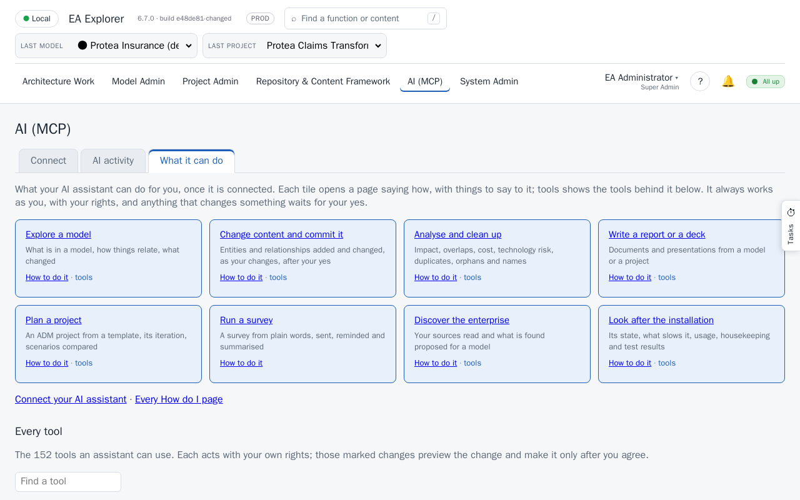

Explore a model with AI
For: Practising architects, Executives
Ask your AI assistant about a model: what is in it, how things relate, what changed.

#/mcp/toolsWhy do this
Not everyone knows where to click to find something. Your AI assistant can explore a model for you: find entities, follow relationships, summarise a domain, explain what something depends on, always with the entities it used so you can check. See AI in EA Explorer.
Using AI in EA Explorer is always your assistant working with your rights: it reads and drafts, you review and commit. Used well, it takes the slow parts of architecture work (searching, cross-checking, first drafts) so you spend your time on judgement.
In TOGAF terms: Outside the standard's method, but in service of it: AI speeds up gathering content (phases B to D), analysis (E) and reporting to stakeholders, with people reviewing every change. See EA Explorer and the TOGAF Standard.
The goal: You ask the model questions in plain words and get answers with evidence.
Before you start Connect your AI assistant.
Things to ask
- What applications support the claims capability in the Meridian model?
- Show me everything within two steps of the Policy Admin system.
- What changed in this model since the Baseline 2026 tag?
- Which entities have no relationships?
The answers carry links back to the entities, so you can open them in EA Explorer.